У липні 1920 року відбувалась велика гастрольна подорож Лівобережною Україною колективу, що отримав назву "Перша мандрівна капела Дніпросоюзу" і в майбутньому став основою хорового колективу “Думка” (“Державна українська мандрівна капела”). Метою діяльності новоствореного колективу було: відродження української народної пісні, її популяризація, боротьба “з дуже поширеними на Україні хулігансько-лакейськими піснями”.
2003 року до Вінницький обласний краєзнавчий музей надійшов цілий комплекс унікальних матеріалів з особистого архіву українського культурного та музичного діяча 20-х років Гната Яструбецького. Серед знайдених документів виявився і рукописний "Щоденник першої мандрівної капели Дніпросоюзу" відомого українського письменника Степана Васильченка, який влітку 1920 року супроводжував колектив у мандрівці. У травні 2019 р. було розпочато роботу над проектом створення інтерактивної онлайн- мапи "Шляхами мандрівної капели. Розстріляні голоси", де кожна зупинка матиме графічну позначку із посиланням на автентичний іконографічний матеріал та відеоролики з елементами реконструкцій подій подорожі, хорових виступів, локацій. Проект реалізується за підтримки Український культурний фонд в рамках конкурсної програми Створюємо інноваційний культурний продукт - програма УКФ.
Більшість учених погоджується, що назва “Дарниця” походить від дієслова “дарувати”.
Дарницю згадують уперше в 1506 році як назву річки. Відомо, що за Дарницькі землі вели багаторічну боротьбу Микільський та Печерський монастирі Києва, але сама місцевість була слабо заселеною. Лише після будівництва залізниці Київ — Полтава наприкінці ХІХ століття (1899) навколо сучасної Празької вулиці виникло поселення залізничників (так звана Стара Дарниця). У 1896-му поблизу сучасного парку Партизанської слави з’явилося селище Нова Дарниця.
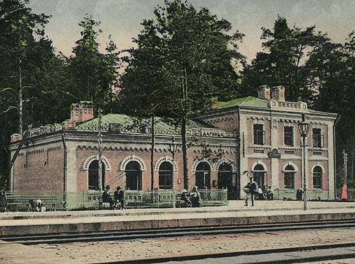{kind=link}
Вокзал Дарниця ХХ ст. Суспільне надбання
На початку ХХ століття та під час громадянської війни Дарниця була відома як стратегічний залізничний вузол, за який точилися тяжкі бої.
Саме з Дарниці Перша мандрівна капела "Дніпросоюзу" рушила 12 липня 1920 р. Лівобережною Україною "дарувати" українську пісню.
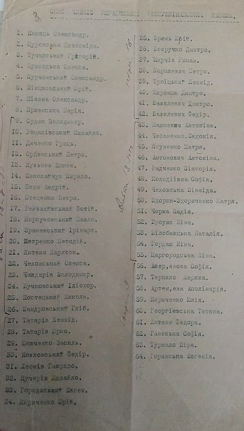{kind=link}
Список Першої мандрівної капели. 1920 р. Суспільне надбання
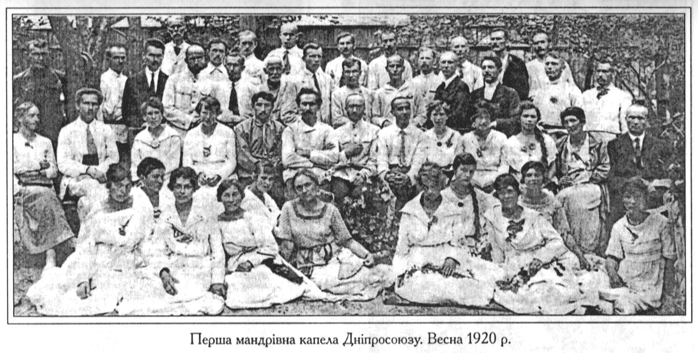{kind=link}
Перша мандрівна капела "Дніпросоюзу" 1920 р. Суспільне надбання

За щоденником Степана Васильченка, у Лубнах на початку ХХ ст. діяли місцеві хори. Одним із них був хор при автокефальній церкві під керівництвом відомого українського композитора Григорія Давидовського. Серед місцевих, хор славився популярністю і також мав змогу гастролювати Україною.
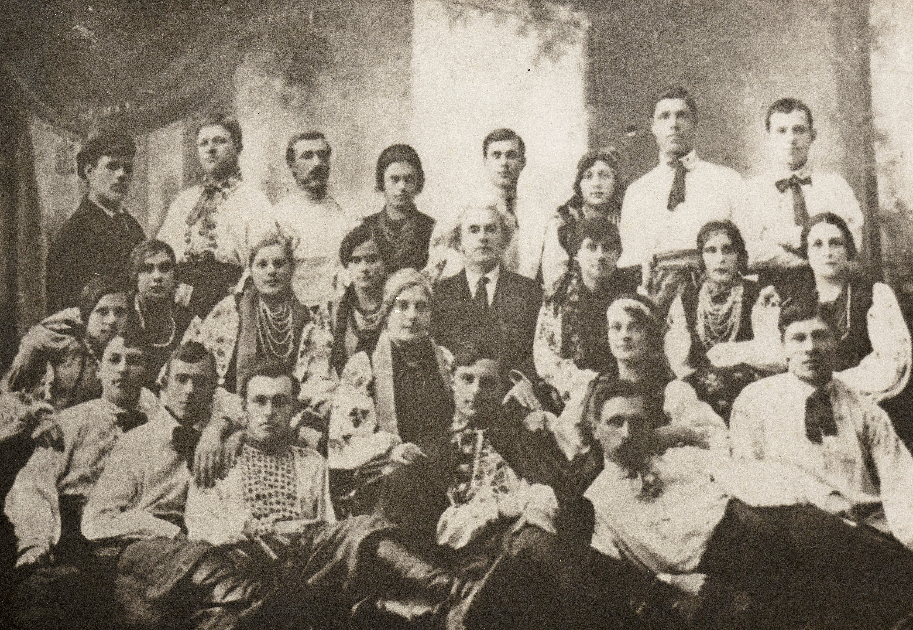{kind=link}
Лубенський хор разом із кер. Давидовським 1920 р. З архіву Лубенського краєзнавчого музею
Григорій Митрофанович Давидовський (1866-1952) – хоровий диригент, композитор, співак (тенор), хпедагог. Організатор і керівник українськиї хорових капел (понад 35-ти), зокрема у рідному селі Мельня (1888), С.-Петербурзі (1892–1902), Ніцці (1902–03), Ростові-на-Дону (1908; гастролював Росією до 1917), Москві, Києві (1917–19, 1921), Вінниці (1923–26), Житомирі, Лубнах, Керчі, , Харкові (1944), Полтаві (1945–49). Завдяки хормейстерського хисту Давидовського, репертуар у його концертах набув темброво багатого звучання, інтерпретації з елементами театралізації та ефектним хоровим імітуванням інструментів: прийомів бандури, гітари, кобзи. До репертуару Давидовсього входили українські народні пісні. Відомими стали сюїти «Бандура» (1896) та «Кобза» (1901).
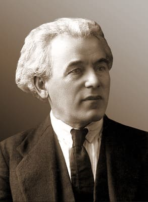{kind=link}
Григорій Давидовський. Суспільне надбання
Ймовірність зустрічі капели «Дніпросоюзу» з хором Давидовського – доволі велика. Адже місцевий національний хор у 20 рр. ХХ ст. активно давав концерти у Лубнах.
Селище міського типу Ромодан засновано наприкінці ХІХ століття як залізничну станцію, що дістала назву від сусіднього села. Село ж мало назву від давнього Ромоданського шляху: ромодан — «велика дорога». За одним переказом, назва шляху пішла від прізвища воєводи Ромодановського. За другим, вірогіднішим,— від чумака Ромодана. Селище йшло від Путивля через Сміле (нині село Роменського району Сумської області), перетинав Сулу, далі йшов вододілом між Сулою та Хоролом (притокою Псла) через сучасні населені пункти Семенівку, Глобине і виходив до Дніпра біля Кременчука. Наприкінці XVIII століття Ромоданівський шлях обсадили вербами. І до прокладення залізниць у 60—80-х роках ХІХ століття він залишався одним із найважливіших шляхів, яким ходили в Крим чумаки.
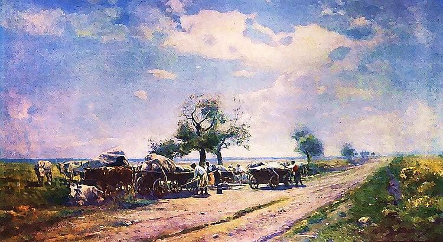{kind=link}
Картина Сергія Васильківського (близько 1900). «Чумацький Ромоданівський шлях». Суспільне надбання
У 1880-х роках розпочалося будівництво залізниці. Будівництво станції тут завершилося лише в 1896 році. Це приміщення було пристосоване не тільки для зустрічі гостей, а й слугувало для виступів місцевих аматорів. Працівники залізниці після важкого робочого дня, або тижня, зустрічалися в залізничному депо і проводили репетиції вистав. Це був аматорський колектив, який робив концерти для селян. Тому й недивно, що Перша Мандрівна капела співала саме у приміщенні Залізничного депо.
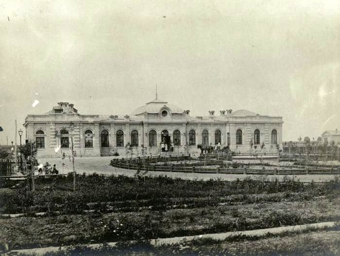{kind=link}
Залізнична станція початку ХХ ст. Суспільне надбання).
Станом на 2019 р. перша залізнична станція не збереглася, недалеко від неї побудували нову наприкінці ХХ ст.
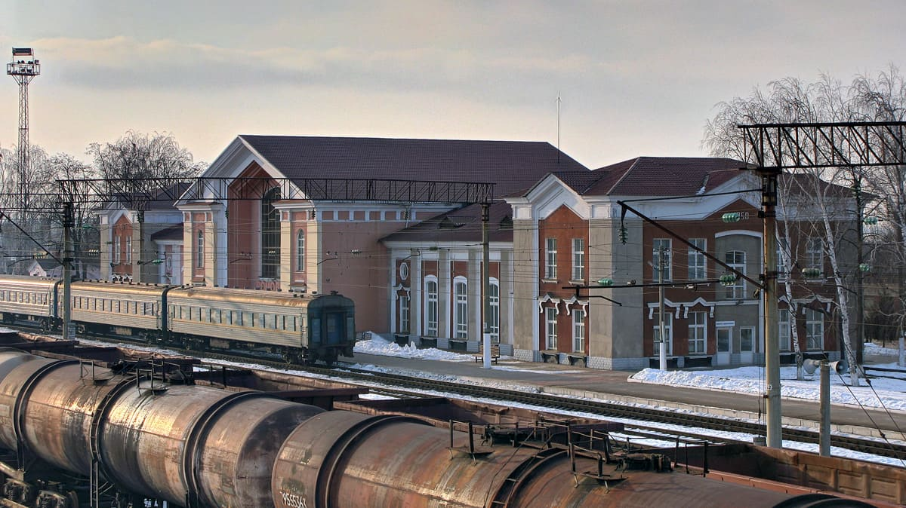{kind=link}
Сучасний вид залізничної станції Ромодан. Суспільне надбання
Кибинці – село Миргородського району Полтавської області, засноване у 1688.
У 1920 р. Перша Мандрівна капела давала концерт для селян в економічному саду, на території ( тоді вже колишнього) маєтку Трощинського.
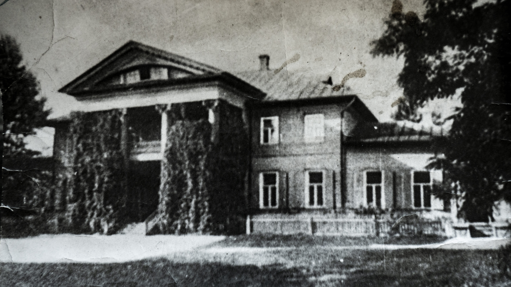{kind=link}
Маєток Трощинського ХІХ ст. З Кибинського шкільного архіву
Дмитро Прокопович Трощинський (1749–1829) — український аристократ козацького стану, державний діяч Російської імперії. Меценат української культури. Саме у 1788 поміщик купує в Кибинцях красивий маєток із італійськими скульптурами, що розташувався на пагорбі біля мальовничого ставка. Жив там доволі довгий час (1806—1814, 1817—1829) і створив «малоросійські Афіни». У маєтку існувала бібліотека, картинна галерея, діяв оркестр і театр.
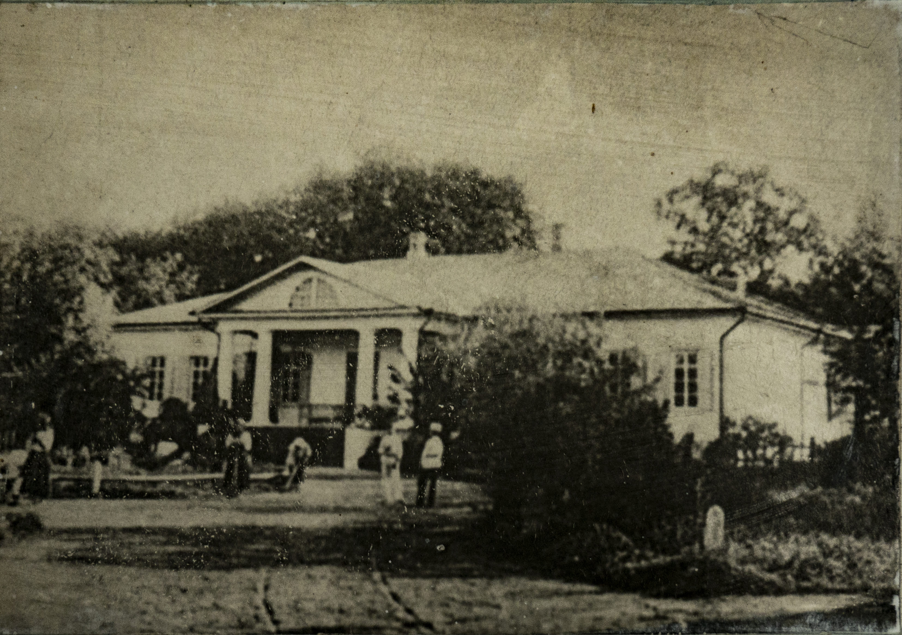{kind=link}
Маєток Трощинського ХІХ ст. З Кибинського шкільного архіву
Сцена театру базувалася прямо посеред ставу і на ній грали Микола Гоголь та його мати, а батько сімейства Василь Гоголь-Яновський займався постановками п’єс разом із Василем Капністом. У Кибинці часто приїздив громадський діяч І. Муравйов-Апостол. Маєток Трощинського вважався одним з осередків української культури першої чверті XIX століття.
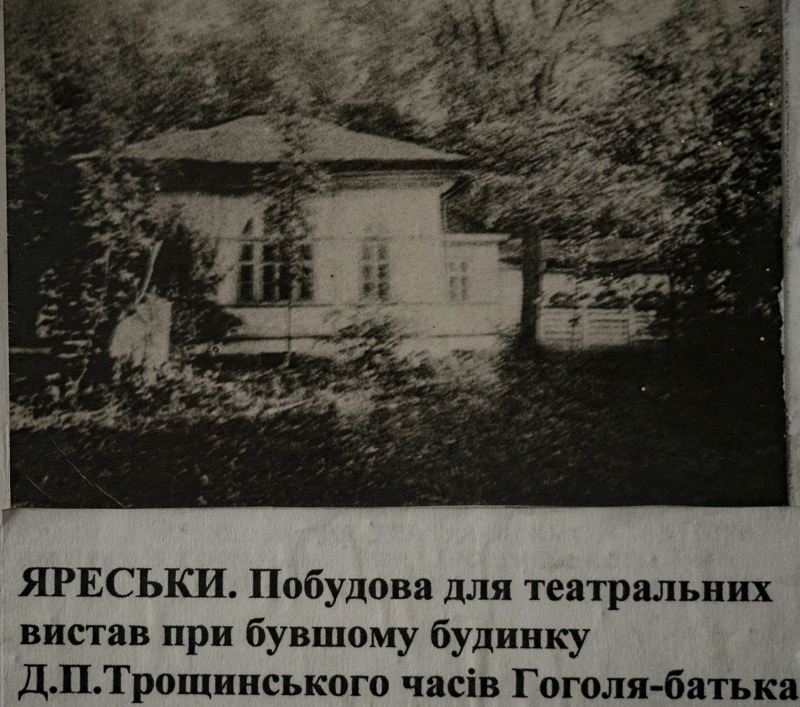{kind=link}
Маєток Трощинського. Прибудова ХІХ ст. З Кибинського шкільного архіву
Після реформи 1861 панську садибу (разом з економією і горілчаним заводом) придбав поміщик Шишкін, який у свою чергу продав її поміщикам Вульфертам.
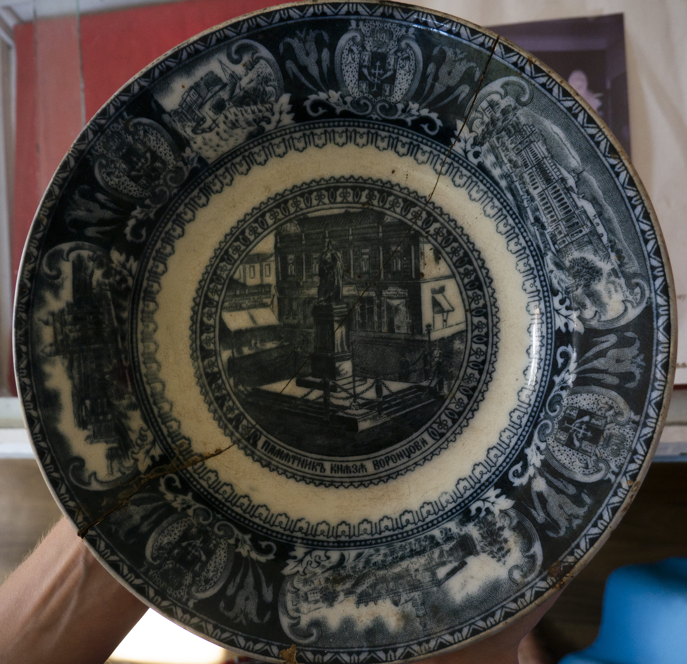{kind=link}
Посуд з маєтку Трощинського ХІХ ст. З Кибинського шкільного архіву

Вид від маєтку Трощинського ХІХ ст. З Кибинського шкільного архіву
1904 створено сільськогосподарське товариство. На початку XX ст. були свиноферми, вальцьовий млин, 2 цегельні, горілчаний завод з річним виробництвом спирту на суму близько 10 тис. крб.
Під час воєнних дій 1918–20 рр. влада неодноразово змінювалася. У цей час садиба Трощинського була розграбована та знищена, залишивши після себе тільки сад, в якому капеляни давали концерт.
На разі від маєтку залишився тільки мальовничий ставок і неймовірний густий ліс.
Миргород в житті Степана Васильченка

С. Васильченко 1902р. З фотоархіву з Миргородського краєзнавчого музею
З ІСТОРІЇ МИРГОРОДСЬКИХ ВУЛИЦЬ
(Додаткова інформація:
http://histpol.pl.ua/books/Rozsokha.L_Z_istoriyi_myrhorodskykh_%20vulyts.pdf
ВУЛИЦЯ ЛАЗОРЕНКА
На місці нинішнього будинку № 18 за перших десятиліть ХХ століття стояла хата
козака Михайла Степановича Дубини. Його дружина Парасковія Лук’янівна славилася
тим, що ткала дуже добрі плахти, за які не раз одержувала премії на земських виставках.
Згодом у тій хаті жив їхній син Петро Михайлович і донька Килина Михайлівна Дубина
(1893 – 1984), дружина відомого українського прозаїка Степана Васильченка (справжнє
прізвище Панасенко; 1878 – 1932).
{kind=link}
Дружина Килина Дубина. З фотоархіву з Миргородського краєзнавчого музею
1914 року письменник приїздив із фронту до Миргорода з нагоди народження його сина Юрія. Бував тут і згодом.
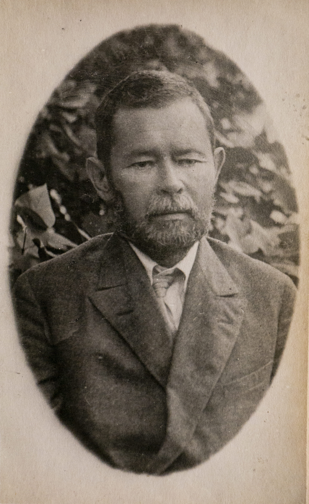{kind=link}
С. Васильченко 30ті рр. ХХ століття. З фотоархіву з Миргородського краєзнавчого музею
У липні 1920 року письменник як кореспондент разом із капелою «Думка» прибув до Миргорода. На вулиці, де жила його дружина, в саду чоловічої гімназії, славетна капела дала тоді кілька концертів.
Спогад дружини Степана Васильченка Килини, про приїзд Мандрівної капели до Миргорода: "Дні, коли хористи давали концерти в Миргороді, й для мене із сином стали святковими – до нас після багатьох місяців розлуки завітав чоловік і батько. Капела виступала в гімназіальному саду, що майже поряд із батьківською нашою хатою. На кожному концерті бувала й я. З якою увагою, захопленням селяни, робітники, червоноармійці слухали пісню. Свою рідну, українську, яку ще зовсім недавно отак відкрито, не ховаючись, ніхто б і не осмілився співати перед аудиторією великою. Був схвильований і Степан Васильченко. Вдивлявся в людські обличчя, прислухався до розмов, міркувань громадян, а коли артисти після концерту відпочивали, він сідав десь у куточку, виймав свій записник у темній клейончастій обкладинці, прилаштовував на коліні й дрібним ощадливим почерком занотовував враження від усього баченого й чутого". (цитата використана з http://libgonchar.org/images/%D0%92%D0%B0%D1%81%D0%B8%D0%BB%D1%8C%D1%87%D0%B5%D0%BD%D0%BA%D0%BE.pdf У нашому місті Миргород С.Васильченком написані фрагменти кількох оповідань. Килина Михайлівна жила з чоловіком у Києві, але по його смерті в 30-х роках повернулася до рідного Миргорода. Рукописний архів С.Васильченка вона передала до Інституту української літератури ім. Т.Шевченка АН УРСР. Під час війни працювала в Миргороді на молочарні, згодом учителювала. По війні одержала нове помешкання на цій самій вулиці (нині – Лазоренка, № 49), де й доживала віку. Небога Килини Дубини – Тамара Василівна Король, шанувальниця народного мистецтва й народної творчості, яка теж жила на цій вулиці, зібрала велику колекцію старовинної української народної вишивки, яку подарувала Миргородському краєзнавчому музеєві.
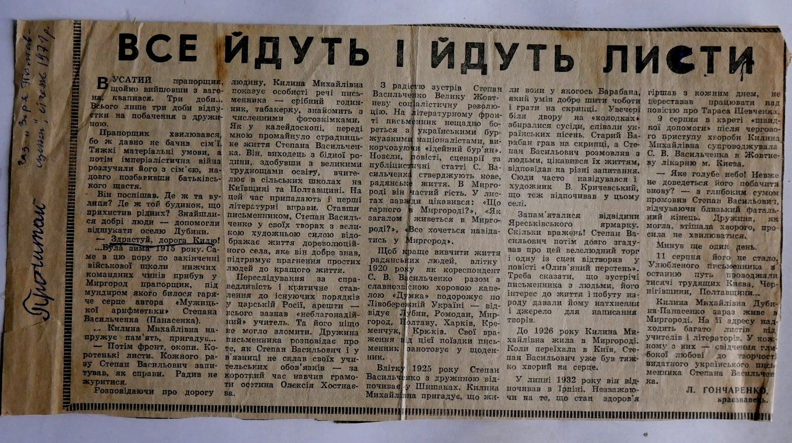{kind=link}
Вирізка з газети. Спогад про С. Васильченка. З фотоархіву з Миргородського краєзнавчого музею
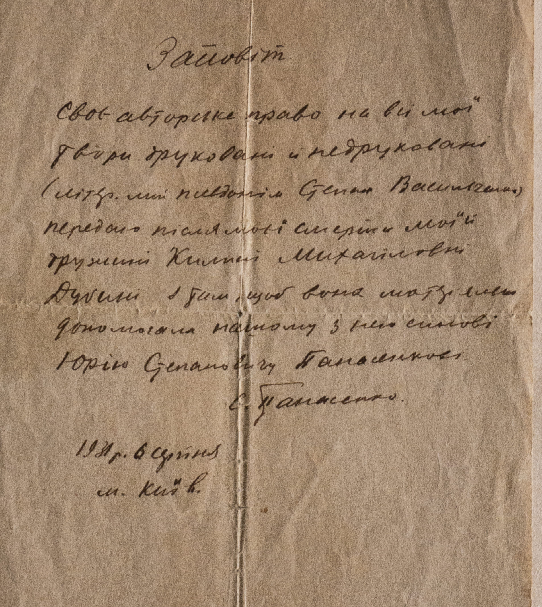{kind=link}
Заповіт С. Васильченка. З фотоархіву з Миргородського краєзнавчого музею
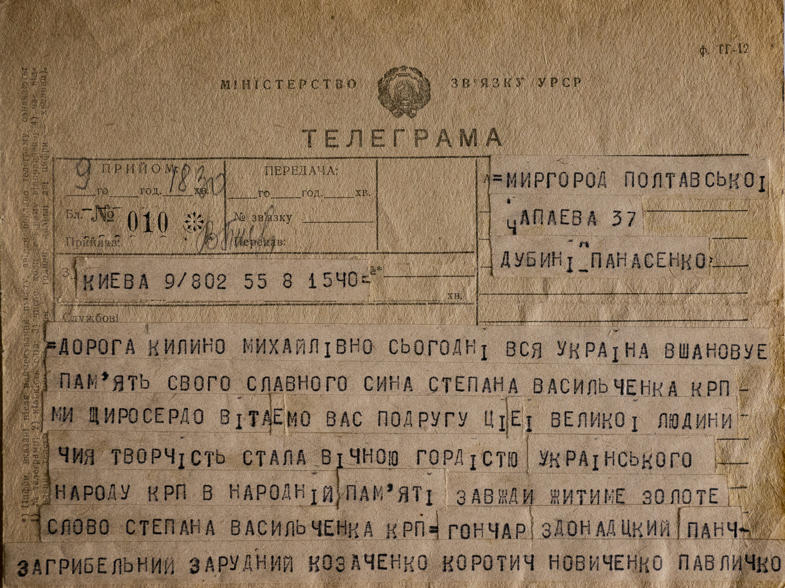{kind=link}
Телеграма. З фотоархіву з Миргородського краєзнавчого музею
Син письменника Степана Васильченка Юрій Панасенко (1914 – 1991), відомий під псевдонімом Кодак, став знаним українським архітектором, із 1949 року жив у Канаді. Він є автором проектів численних церков, пам’ятників, шкіл у Канаді й США. Підтримував зв’язки з Миргородом. Помер у м. Оттаві першого року здобуття Україною незалежності.
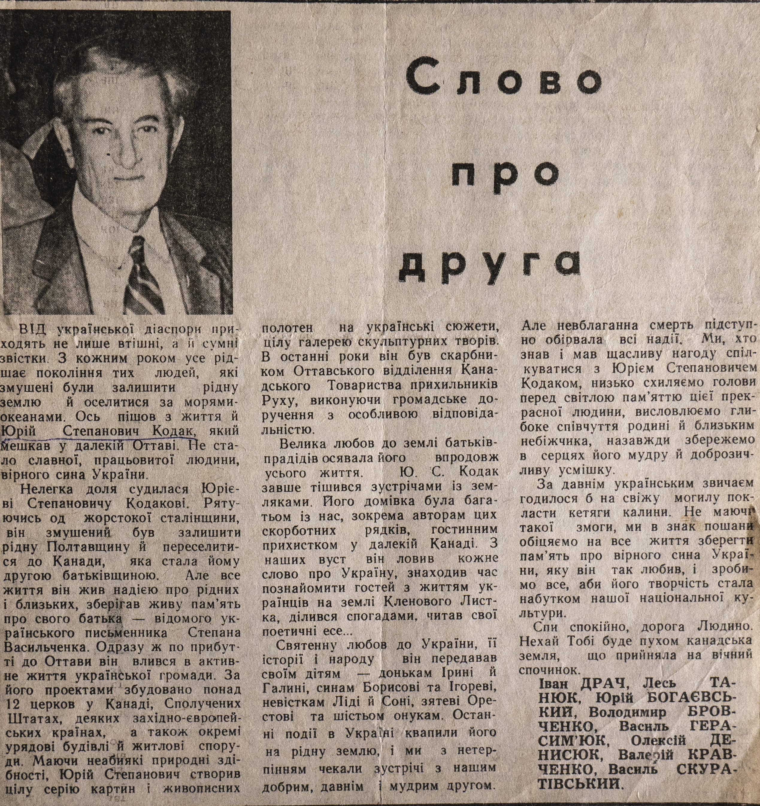{kind=link}
Вирізка з газети. Спогад про сина Юрія Кодака. З фотоархіву з Миргородського краєзнавчого музею
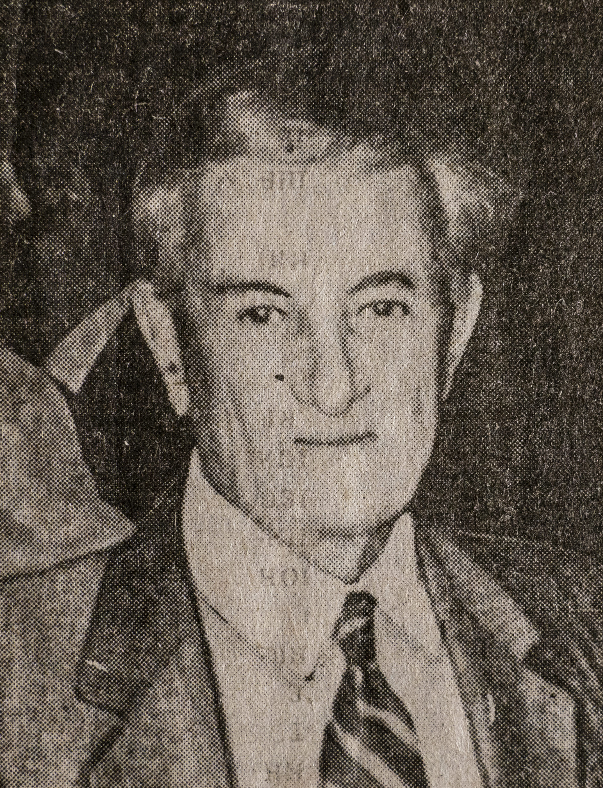{kind=link}
Юрій Кодак син С. Васильченка. З фотоархіву з Миргородського краєзнавчого музею
ГАРКУШИНЦІ – село Миргородського району, розташоване на лівому березі річки Хоролу. Уперше назва Гаркушинці зустрічається на карті французького інженера Г. де Боплана (1630-1648 рр.).
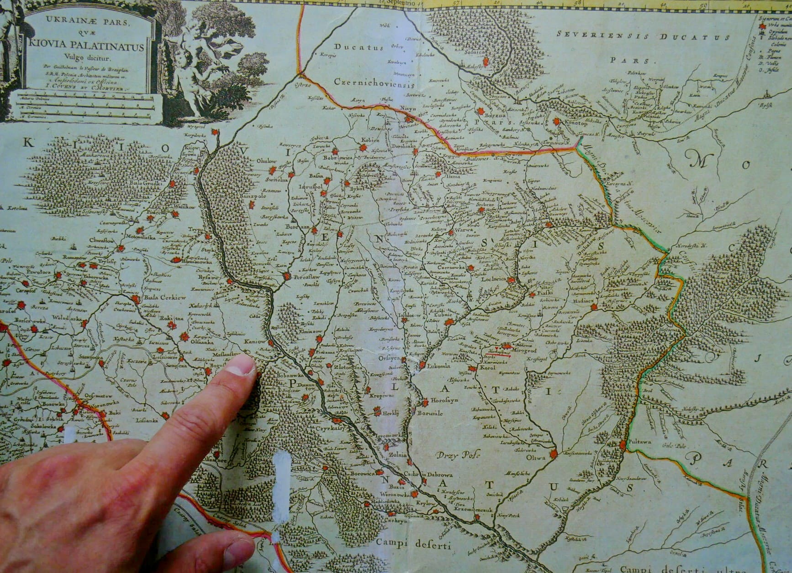{kind=link}
Карта 17 ст. з домашнього архіву Парасковії Сирбу
Село виникло шляхом козацької колонізації. Входило до складу 1-ї Миргородської сотні Миргородського полку. «Можнійшими» козаками на той час були Кіндрат Правосуд, Кирило Ячний, Іван Бойко, Федір Педоренко.
«Чи душа твоя плаче?
Як згадаєш козаче,
Як Полтава палала,
Пушкаренка скарали,
І на глум, на поталу, нас татарам віддали…»
Спогад про 1- Миргородський козацький полк. Вірш розповіла мешканка с. Гаркушинці Парасковія Григорівна Сирбу.
1729 у селі 17, а в 1781 – 73 двори. 1737 р. отаманом села був Петро Горкушинський.
У селі діяла церква Святої Великомучениці Варвари (споруджена 1753 р., новий храм збудований 1873 р.), якою опікувалася родина місцевого дідича Рудя.
За словами мешканки селі, Парасковії Григорівни Сирбу, саме завдяки поміщику Рудю була збудована церква з дзвіницею і школа (початкове народне училище 1897 р.), які ще застала Перша Мандрівна капела «Дніпросоюзу» у 1920р.
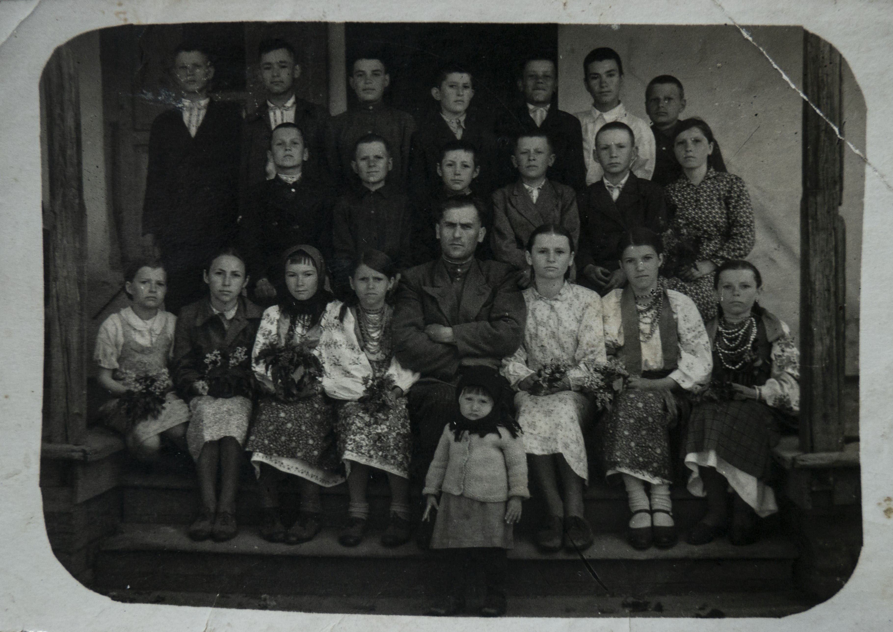{kind=link}
Школа ХХ ст. з домашнього архіву Парасковії Сирбу
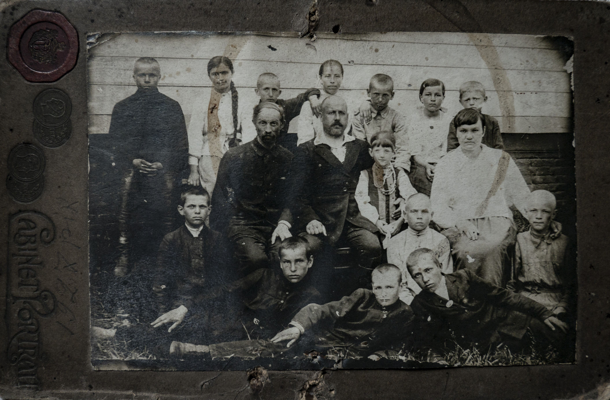{kind=link}
Школа ХХ ст. з домашнього архіву Парасковії Сирбу
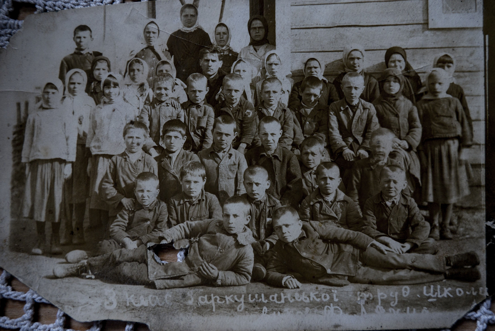{kind=link}
Школа ХХ ст. з домашнього архіву Парасковії Сирбу
На початку XX ст. неподалік від села діяла цегельня дідича Марковського, близько 1911 р. у Гаркушинцях працював цегельний завод Г. Рубана. 1926 р. у селі налічувалось 284 господарства, 1491 житель.
У 20 рр. ХХ ст. діяла сільська півча (хор), заснований місцевим талановитим музикою Степаном Педоричем. За словами Парасковії, цю півчу могла чути Мандрівна капела, коли приїздила у село.
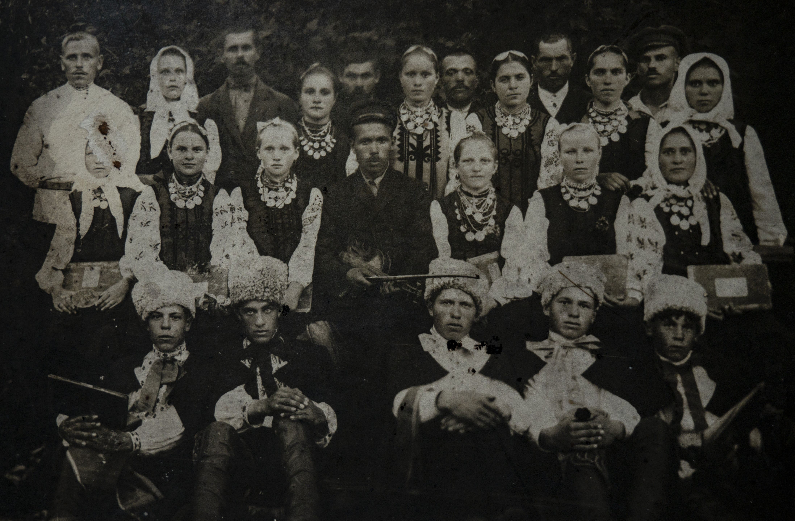{kind=link}
Гаркушинський хор ХХ ст. з домашнього архіву Парасковії Сирбу
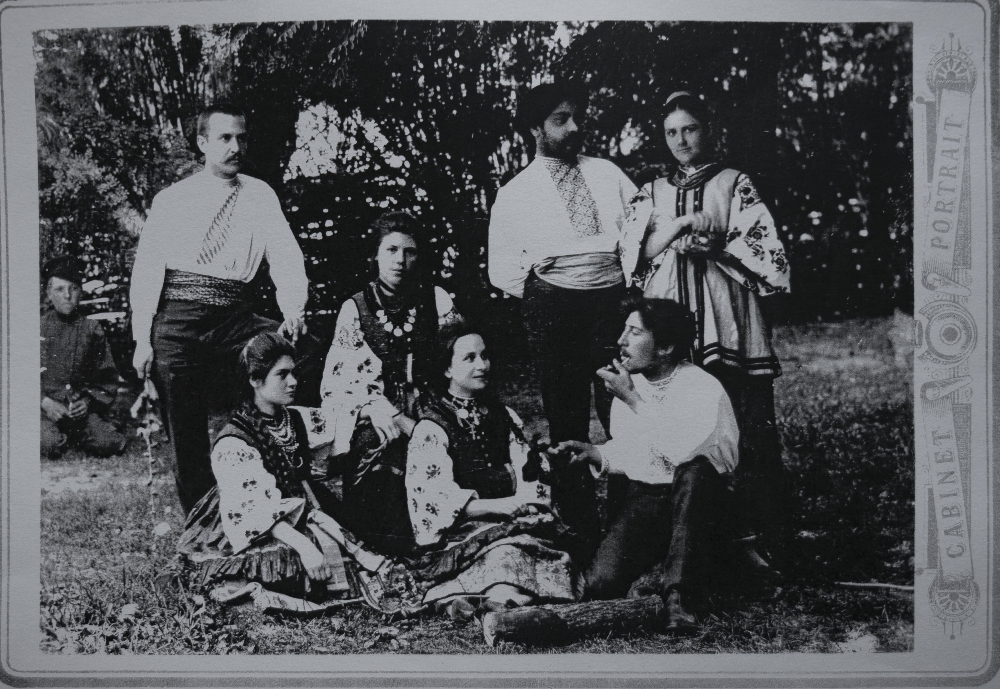{kind=link}
Гаркушинський хор ХХ ст. з домашнього архіву Парасковії Сирбу
15 березня 1931 р. було створено колгосп імені ДПУ (голова — Федір Варфоломійович Козленко). У 40-х роках колгосп мав назву імені Полякова (названий ім'ям першого голови колгоспу, убитого під час насильницької колективізації, 1930 р.) 1945 р. головою колгоспу був Костянтин Андрійович Роґочий. У 20-х — 30-х рр. зазнали репресій члени родин Бутенків, Педоричів, Степур, Устименків, Шумейків, Якименків та ін.
1944 р. в селі було 247 дворів, 720 жителів; 1980 р. — 550 дворів, 1518 жителів; 1993 р. — 689 дворів, 1603 жителі; 2006 р. — 552 двори, 1400 жителів.
Станом на 2019 р. кількість населення 1402 осіб.

Культура Полтави початку ХХ ст.
Полтава — місто обласного значення в Україні, адміністративний центр Полтавської області. Засноване у 899 року. За першою літописною згадкою міста, у давньоруському Іпатіївському літописі відома під назвою «Лтава». Сучасна Полтава походить від найменування річки Лтава, правої притоки Ворскли.
На початку XX століття щодо міста також вживали термін «Духовний центр України», чому сприяли діяльність цілої плеяди видатних діячів духовенства, культури і мистецтва, значні церковні та історичні пам'ятки. Окрім того Полтава була найбільшим центром розвитку української культури та просвіти того часу.
На Полтавщині сформувалося певне музичне культурне середовище. У Полтаві працював директором театру письменник І.П. Котляревський, синодальними регентськими курсами керував учень П.І. Чайковського, піаніст, диригент і композитор П. Щуровський. На цих курсах у Щуровського вивчав музичну теорію автор всесвітньовідомої музики до «Заповіту» Т.Г. Шевченка Гордій Гладкий. Полтавщину прославили її видатні земляки: бандуристи Остап Вересай та Федір Кушнерик, диригенти Нестор Городовенко і Григорій Китастий, Федір Попадич і Володимир Кабачок; композитори: Ісаак Дунаєвський, Платон і Георгій Майборода, Олександр Білаш, Григорій Чухрай, Микола Лисенко.
І власне, Перша мандрівна капела «Дінпросоюзу» мала у своєму репертуарі композиції Миколи Лисенка.
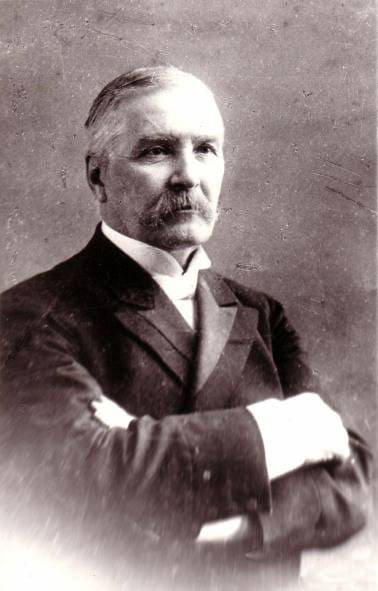{kind=link}
Микола Лисенко (1842-1912). Суспільне надбання
Основний внесок Лисенка в національну культуру полягає в тому, що по перше: збираючи скарби народної музики, досліджуючи та обробляючи їх, композитор повертає народу у «вишуканій художній оправі»; по друге: він розвив, на основі народного мелосу музику професійної мови.
У 1920 році мандрівна капела виступала у міському театрі.
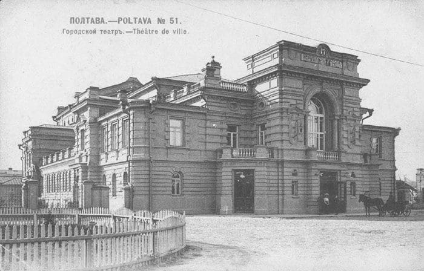{kind=link}
Міських театр. Полтава. ХХ ст. з Полтавського архіву
Полтава і зараз має величезну кількість творчих колективів. Зокрема — Заслужений ансамбль пісні і танцю України «Лтава» ім. В. Міщенка. Колектив заснований у 1957році. Вони і зараз продовжують пропагувати українську народну пісню і гастролювати Україною.
Театр-Цирк «Муссурі» — будівля театру-цирку в Харкові. Напочатку ХХ століття найбільший театр- цирк в світі, вміщував 5750 глядачів. Пам'ятка архітектури місцевого значення в стилі модерн.
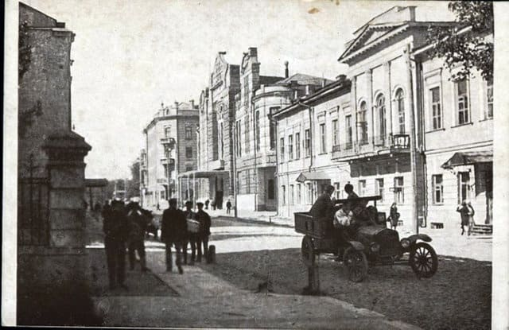{kind=link}
Театр Муссурі. З архіву Харківського історичного музею
Будівлю зведено 1911 року як приміщення цирку. Автор проекту — архітектор Борис Корнєєнко.
{kind=link}
Театр Муссурі. Закладання фундаменту. З архіву Харківського історичного музею
Будівля у стилі модерн, з червоної цегли. Глядацька зала не мала підпірок, висота куполу становила 70 метрів. Місця для глядачів розташовувалися амфітеатром, а сама арена розташовувалася нижче рівня землі. На той час споруда була найбільшим цирком в світі і вміщував майже 6000 глядачів.
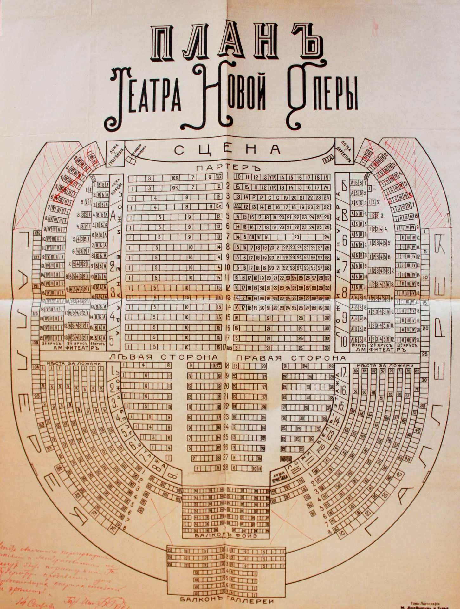{kind=link}
Театр Муссурі. План. Суспільне надбання.
В 1912 у будівлю переобладнали під оперний театр, який став носити назву «Муссурі» — за іменем театрального підприємця Герасима Михайловича Муссурі, який придбав будівлю. Театр відкрився виставою «Орфей у пеклі», за участю Остапа Вишні, який створив лібрето до вистави. Була поставлена українська оперта – «Сорочинський ярмарок», «Весілля в Малинівці». На сцені цього театру виступали Федір Шаляпін, Володимир Маяковський, Володимир Висоцький та інші.
У 1911–1989 роках — будівля була найбільшою театральною спорудою Харкова.
Проте в архівних документах про цирк Муссурі були не втішні відгуки. У справах на початку ХХ ст. «Про перевірки усіх театрів і сінематографів у місті Харкові» інженера ми фіксується чимало порушень.

Акт про порушення. 1913 р. Суспільне надбання
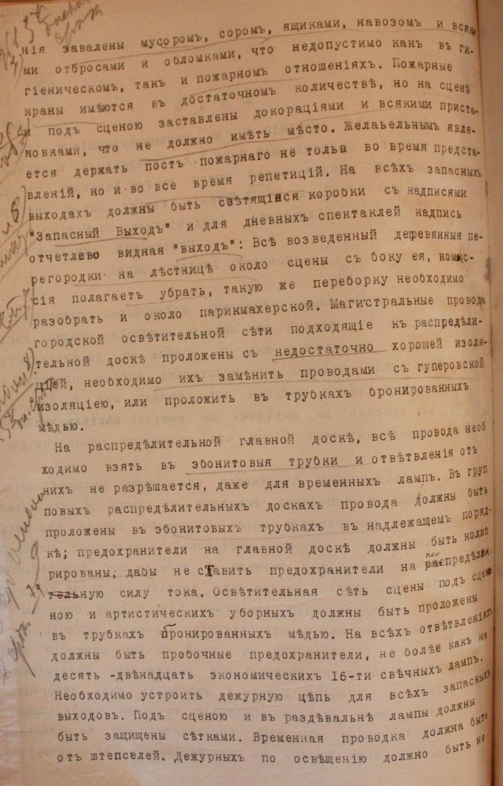{kind=link}
Акт про порушення. 1913 р. Суспільне надбання
У період з 1919 по 1923 будівля колишнього цирку використовувалася більшовиками для проведення суспільно-політичних заходів. Тут виступали такі їхні лідери як Надія Крупська, Фелікс Дзержинський. 6 — 10 березня 1919 у приміщенні проходив, повністю контрольований більшовиками, Третій Всеукраїнський з'їзд Рад Українська Соціалістична Радянська Республіка. На цьому заході було ухвалено першу конституцію УРСР, крім того це зібрання проголосило формальну «незалежність» УСРР.
У 1920 році капела Дніпросоюзу «чекала в черзі» свого концерту, адже перед виступом проводилися політичні заходи і концерти доводилося переносити на наступний день. Як згадується в щоденнику в акустичному відношенні театр не підходив для виступів співаків.
Близько 60 років в радянський період у будівлі розташовувався Харківський театр музичної комедії, який зараз знаходиться на тій же стороні цієї вулиці через один будинок, у приміщенні палацу культури «Харчовик» (вул. Благовіщенська, 32).Через погану акустику й непристосованості до проведення вистав театр неодноразово перебудовувався, поступово втрачаючи первісний вигляд: змінювався фасад, губилися деталі, будівлю було обкладено жовтим кахлем.
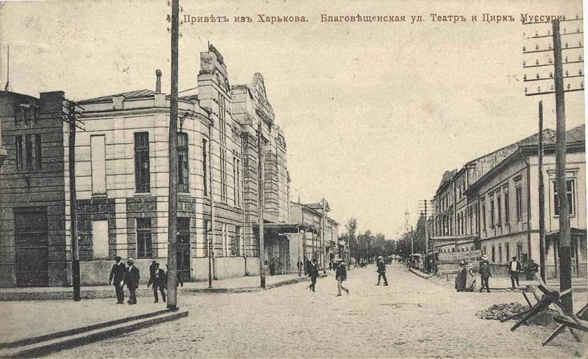{kind=link}
Театр Муссурі. З архіву Харківського історичного музею.
У 1987 будівлю було визнано аварійною. Вона неодноразово горіла, адже деякі з конструкцій дерев'яні, а перекриття між дахом та залою для глядачів — з пресованого очерету.
В 2005 будівлю театру було вилучено з переліку пам'яток архітектури.
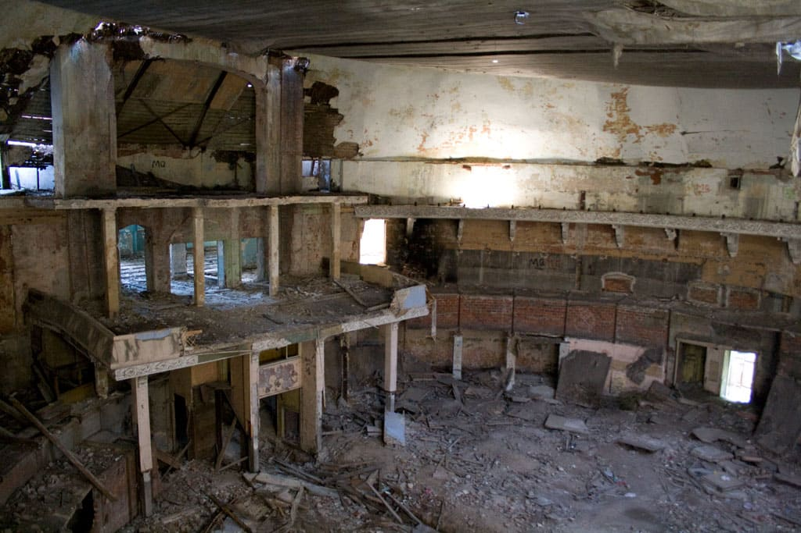{kind=link}
Театр Муссурі. 2009р. https://kharkov.livejournal.com/766934.html
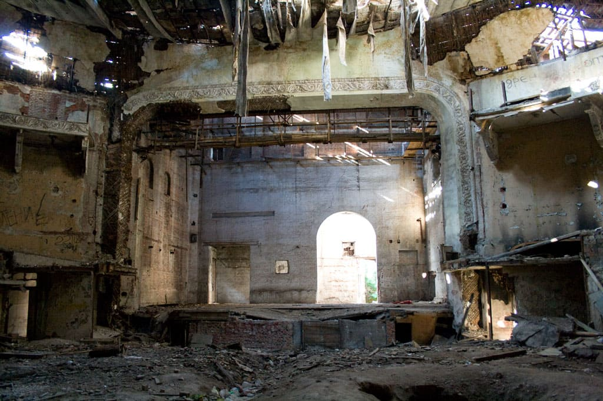{kind=link}
Театр Муссурі. 2009р. https://kharkov.livejournal.com/766934.html
Бутенки — село в Україні, в Кобеляцькому районі Полтавської області , засноване у кінці XVIII століття.
У 1870 року між хуторами, на землях козака Бутенка, було прокладено Харківсько-Миколаївську залізницю. Нова станція отримала назву Кобеляки й стала центром об'єднаного села. Відкриття залізничної станції сприяло швидкому розвитку села, розширенню торгівлі.
Село Бутенки знаходиться на лівому березі річки Вовча в місці впадання її в річку Кобелячка. Через село густо проходять автомобільні дороги та залізниця, станція Кобеляки. Власне на цій станції капеляни зупинилися і на деякий час оселилися, даючи концерти.
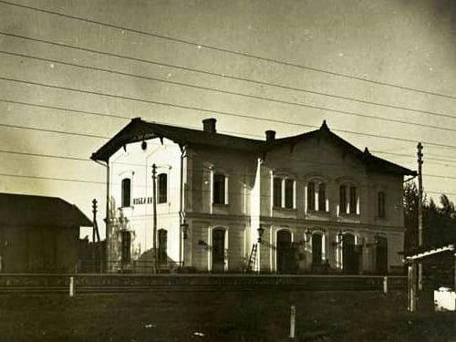{kind=link}
Пасажирська будівля станції Кобеляки, поч. ХХ ст. Суспільне надбання
Мандрівна капела та місто Кобеляки
Місто Кобеляки знаходиться на березі річки Ворскла (в основному на правому березі) в місці впадання в неї річки Кобелячки та за 13 км від залізничної станції Кобеляки. Назва міста ймовірно походить від річки Кобелячки або була калькою назви правобережних Кобиляк (нині село Звенигородського р-ну Черкаської обл). Населений пункт вперше позначено на карті Корнелія Данкерта, 1620—1636 років та Фридерика де Віта, 1632 р.
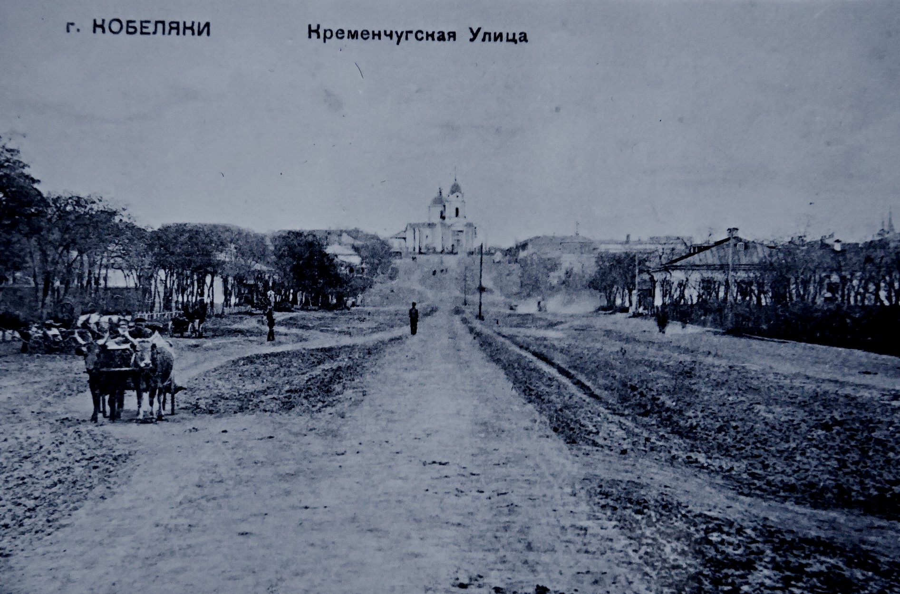{kind=link}
Старовинні Кобеляки. З архіву Кобелянського краєзнавчого музею
З 1917 року в складі Української Народної Республіки. Після відступу союзників і низки поразок української армії Полтавську губернію, в тому числі Кобеляки було анексовано більшовиками в 1920 року. У січні 1919 створена повітова антиукраїнська парторганізація більшовиків, що налічувала 60 чоловік, яка підняла заколот проти Української Народної Республіки. 22 січня 1919 р. для придушення заколоту Кобеляки було здобуто Кінним полком ім. Петра Болбочана Армії УНР, перейменованого згодом на Кінний полк Чорних Запорожців.
Для капелян подорож Лівобережною Україною, була доволі небезпечною і тривожною. Степан Васильченко не раз згадує у своєму щоденнику про облоги та ватажок Махна.
Мешканець Кобеляк Матвій Бобошко, у період 1917-1921 рр. вів так званий «Щоденник прикажчика».
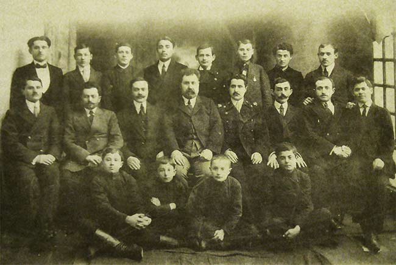{kind=link}
Матвій Бобошко (ліворуч крайній у 2 ряді) групове фото з працівниками магазину 1917 р. З архіву Кобелянського краєзнавчого музею
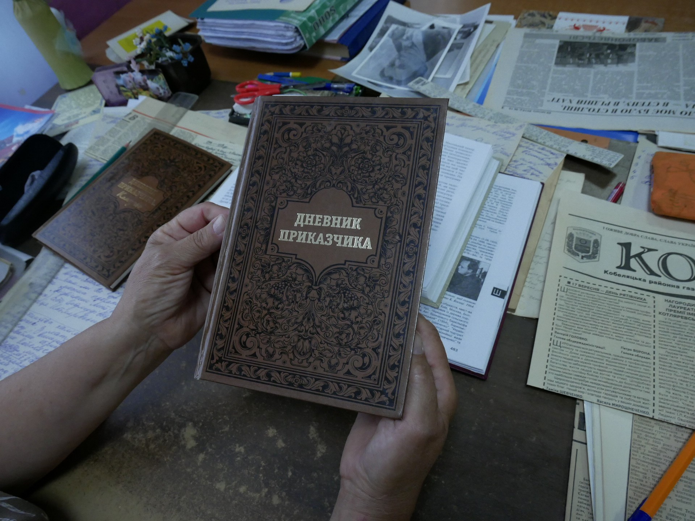{kind=link}
Щоденник Матвія Бобошко. З архіву Кобелянського краєзнавчого музею
Він занотував цікаві спостереження щодо участі у поточних подіях анархістів України: "Началась новая борьба анархистов со всеми: с белами, красными, петлюровцами и вообще со всякой властью. Слід зазначити, що М. Бобошко вперше у своїх записах помічає анархістів, що дозволяє зробити два важливі висновки. По-перше, після приєднання частини українських повстанців, які протистояли білим, до більшовиків, у збройному протестному русі, що продовжував боротьбу проти "диктатури пролетаріату", помітне місце займала анархістська ідеологія. По-друге, місцеві повстанці, які восени 1919 р. пристали до махновців, певною мірою поділяли цю ідеологію. Отож, не дивно, що в січні 1920 р., на "старий" Новий рік кобеляцький прикажчик поділився із щоденником такими висновками щодо махновців: "…Среди большевиков, особенно украинцев, начал ся раскол: Махно, прежний приверженец Советской Власти, объявил новое положение вещей, а именно: анархию. Долой всякую власть, Да здравствует Украинская Безвластная Федерация! Высшее право, право восстания!
26-30 липня 1920 р. М. Бобошко вкотре записав у щоденнику: "Все время очень тревожно; ходят слухи, что кругом города много повстанцев…Жизнь в городе замерла".
(Більше інформації: http://shron1.chtyvo.org.ua/Arkhireiskyi_Dmytro/Schodennyk_prykazhchyka_iak_dzherelo_z_istorii_selianskoho_povstanskoho_rukhu_u_1917-1921_rr_na_pivd.pdf)
Та капеляни попри повстання і напругу, все таки продовжили виступи і давали концерти в Кобеляках, даруючи їм українські пісні і підіймали настрій містянам.
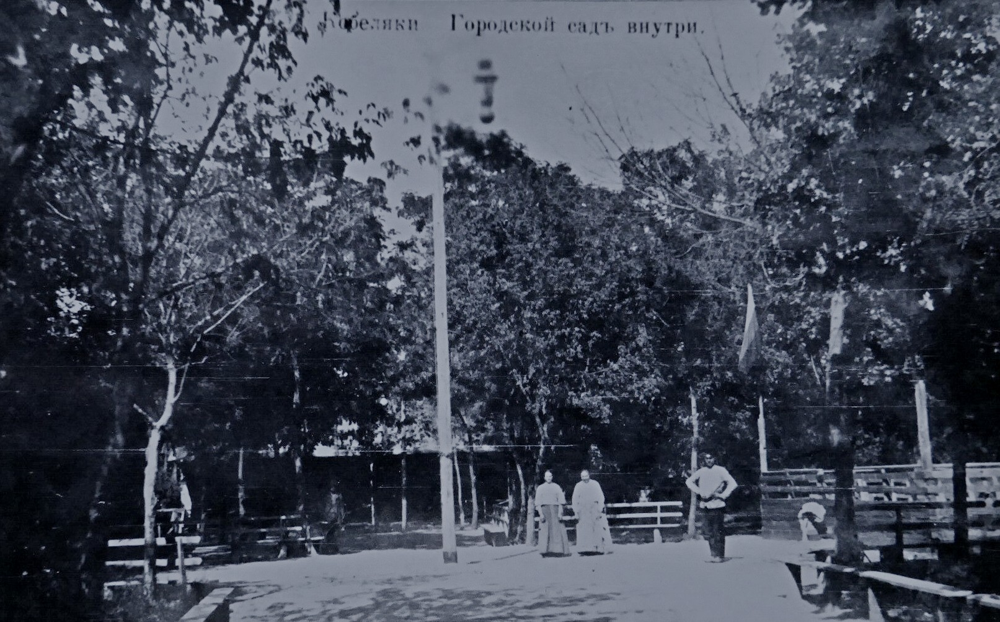{kind=link}
Міський сад, початок ХХ ст.. З архіву Кобелянського краєзнавчого музею
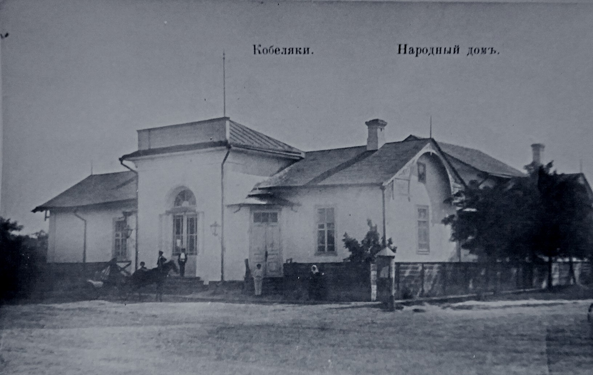{kind=link}
Народний дім, початок ХХ ст. З архіву Кобелянського краєзнавчого музею
КРЕМЕНЧУК – місто обласного значення Полтавської області. Має 2 мікрорайони: Автозаводський і Крюківський. Знаходиться на Дніпрі (більша частина на лівому березі, менша, колишнє смт Крюків, – на правому). Офіційною датою заснування міста вважається 1571.Переважна більшість дослідників стверджує, що назва міста походить від тюркського слова «керменчик» – «невелика фортеця». За іншими версіями – від тюрк. «кер» («кир»), що означає пагорб; від імені козака Кременя.
{kind=link}
Старий Кременчук. З архіву Кременчуцького краєзнавчого музею
Мандрівна капела давала концерти як і в самому Кременчуці так і в поселкові Крюкові. Приміщення, в яких виступала капела, на сьогодні не збереглися, але про них залишилися цікаві факти.
«Корсо» – електробіограф (кінотеатр). Відкрився в грудні 1913 р. в приміщенні театру «Корсо» в пос. Крюків (за іншими даними, трохи раніше, у 1909 р.).
Назва «Корсо» походить від італійської назви в тамтешніх містах розважальних заміських потягів, а також звичайних вечірніх прогулянок у кінних екіпажах головними вулицями міст. Тобто «Корсо» – це розважальний заклад, де відбувалися не тільки перегляди фільмів, а й відбувалися різні заходи.
Так, капела "Дніпросоюзу" у 1920 р., завітала саме в кінотеатр "Корсо", який в поселкові Крюків, був лише один. На разі, залишився тільки фасад кінотеатру "Корсо".
{kind=link}
Фасад від старого кінотеатру. Суспільне надбання
{kind=link}
Старий Крюків. З архіву Кременчуцького краєзнавчого музею
Пушкінська народна аудиторія – заклад культури і дозвілля, що з’явився в місті в кінці ΧΙΧ ст. і названий ім’ям О. С. Пушкіна на честь сторіччя з дня його народження (1899 р.). Являла собою двоповерхову цегляну споруду на високому підмурку. Знаходилася на розі вул. Городової та вул. Міщанської (на місці сучасної швейної фабрики).
У Народній аудиторії була велика зала, розміщувалася міська народна бібліотека. Тут відбувалися театральні вистави (як гастрольні, так і аматорського колективу). Крім театральних вистав, тут проходили гастрольні концерти, виступи відомих людей того часу: Д. Яворницького, письменника В. Сологуба, І. Сєвєряніна, А. Рубінштейна, С. Рахманінова та багатьох інших.
Часто відбувалися й заходи суто просвітницькі на кшталт Дня «Білої квітки» – акції, що була присвячена боротьбі з туберкульозом (1913 р.). З цієї нагоди в приміщенні Народної аудиторії була влаштована пересувна просвітницька виставка. Головою комітету з проведення Дня «Білої квітки» в місті була пані Айсштеттен – дружина кременчуцького поліцеймейстера А. І. де Айсштеттена.
{kind=link}
Народна айдиторія. ХХ ст. Суспільне надбання
На той час було складно сприймати українську мову, народні пісні, адже Нова система впливала на містян. Але загалом, Кременчук був налаштований на музичний український лад. За словами наукової працівниці Кременчуцького краєзнавчого музею, пані Вікторії, з 1918 р. діяла Кременчуцька капела імені М.В.Лисенка під керівництвом Прокопія Сапсая.
{kind=link}
Кременчуцька капела, кер. Прокопій Сапсай. З архіву Кременчуцького краєзнавчого музею
Прокопій Сапсай - відомий композитор, диригент, режисер та актор. Репертуар капели був складним, різноманітним, до нього входили українські народні пісні, хорові твори українських композиторів, а також класичні твори російських і зарубіжних авторів.
У 1920 р. при Кременчуцькій капелі була започаткована художня рада. Найбільш обдарованих учасників капели направляли на навчання до Київської Державної консерваторії. Кременчуцькі співаки Нестеренко і Бабенко - згодом потрапили до Мандрівної капели "Дніпросоюзу".
{kind=link}
Кременчуцька капела. З архіву Кременчуцького краєзнавчого музею
На жаль, гарна споруда Народної аудиторії була частково зруйнована під час Великої Вітчизняної війни. Руїни її зберігалися до 60-х років ΧΧ ст. Зрештою, вони були знесені, і на її місці зведено безлику залізобетонну споруду Кременчуцької швейної фабрики.
{kind=link}
Зруйнована народна аудиторія. Суспільне надбання
Станом на 2019 культурне співоче життя в Кременчуці не припиняється.. Народний ансамбль"Славутич", заснований у 1975 році ,на сьогодні є одним із найбільший серед самодіяльних колективів міста. Ансамбль поєднує три жанри: вокальний, хореографічний та інструментальний - кожна складова має свій окремий репертуар, який доповнює загальну концепцію "Славутича".
За більш ніж чотири десятиліття свого існування у "Славутич" виховав вісім поколінь артистів, які неодноразово виступали на вітчизняних і закордонних сценах.
Нестор Городовенко та капела «Дніпросоюзу»
До Лохвиці капела приїхала давати концерт невипадково. Для Нестора Городовенка, диригента капели, було дуже важливо відвідати рідні краї. Нестор Феофанович народився у Венславах на Полтавщині (нині Лохвицького району Полтавської області).
{kind=link}
Нестор Городовенко. Суспільне надбання
1907 року закінчив Глухівський педагогічний інститут, працював у навчальних закладах міста Лохвиці, Переяслава, де викладав співи й керував хорами.
А у 1920 р Городовенко розпочинає велику творчу, гастрольно-концертну діяльність разом із капелою «Дніпросоюзу».
{kind=link}
Програма Першої Мандрівної капели Дніпросоюзу. З архіву Лохвицького краєзнавчого музею
{kind=link}
Програма Першої Мандрівної капели Дніпросоюзу. З архіву Лохвицького краєзнавчого музею
{kind=link}
Капела Дніпросоюзу у перших мандрах. З архіву Лохвицького краєзнавчого музею
Про інтенсивність праці диригента свідчить такий факт: за перші три роки капела дала майже 400 концертів. Н. Городовенком була налагоджена творча співпраця з відомими композиторами і співаками М. Вериківським, Л. Ревуцьким, Б. Лятошинським, І. Козловським тощо. Діяльність «Дніпросоюзу» на разі «Думки» відобразила динаміку подальших естетико-художніх перетворень української хорової культури в умовах тогочасної епохи.
{kind=link}
Програма капели Дніпросоюзу. З архіву Лохвицького краєзнавчого музею
Розпочалася кропітка робота над формуванням і збагаченням репертуару. Програми концертів були просякнуті національно-пісенним духом. Спершу вони складалися виключно з народних пісень, проте в скорому часі були підготовлені тематичні цикли з творів М. Лисенка, М. Леонтовича, календарно-обрядові (в тому числі Народні пісні Галичини, де були представлені твори С. Людкевича, Н. Нижанківського, Г. Тополь-ницького та інших), революційні пісні, в середині 20-х років – музика народів СРСР, російська, а далі зарубіжна музика (від монументальної ораторії Пори року Й. Гайдна до творів імпресіоністів М. Равеля, К. Дебюссі), яка тоді в Україні ще не виконувалася.
{kind=link}
Програма капели Дніпросоюзу. З архіву Лохвицького краєзнавчого музею
{kind=link}
Програма капели Дніпросоюзу. З архіву Лохвицького краєзнавчого музею
У 30-тих роках розпочинається фронтальний наступ на хорову музику, яку ототожнювали з церковщиною: розпочалися чистки хористів і хормейстерів із сумнівним соціальним походженням, заборонялися апробовані концертні програми, класичні твори та репертуар 20-х років замінялися „актуальними” ударницькими одами. Це не тільки виснажувало учасників хорового руху, але й привело до масової ліквідації професіональних та аматорських капел. У пропагандистське русло звернено і Думку, хоч Н. Городовенко прагне зберегти капелу. У нелегкій більшовицькій дійсності колектив, за його словами, все ж таки мав „можливість плекати, берегти та ширити пісенну творчість українського народу”.
В 1934 р. капела вперше виконує Реквієм Д. Верді. Таким чином, Н. Городовенку належить першопрочитання в Україні багатьох творів світової класики та піднесення рівня до європейських капел того часу. Згодом колектив звертається до кантато-ораторіальних творів українських композиторів. Установка на широкий стильовий спектр виконуваних творів потребував майстерного володіння всім арсеналом виразових засобів.
В 1936 р. тріумфальний виступ Думки на першій Декаді українського мистецтва в Москві, на якому був присутній Сталін, послужив звільненню Н. Городовенка з капели. Відомий диригент посмів поскаржитися „Хазяїну”, що капелі не дозволяють співати духовних творів. Сталін іронічно відповів: „А ви їх співайте без слів”. Зловісного 1937-го Н. Городовенка було звільнено і приречено на вигнання, а капелу також „репресували”, вирвавши з її репертуару – національну хорову класику. Під час війни Н. Городовенко з колишніх співаків Думки та інших хорових колективів, що залишилися у Києві, створює Українську національну капелу, прощальний концерт якої в серпні 1943 р. відбувся на сцені оперного театру.
{kind=link}
Програма капели Дніпросоюзу. З архіву Лохвицького краєзнавчого музею
У 1944 р. виїхав до Німеччини, де 1945 р. організував хор «Україна». З 1949 р. постійно жив у Канаді (м. Монреаль), де керував хором «Україна».
{kind=link}
Погруддя Нестора Городовенка у Лохвиці. Суспільне надбання
(Більше про хоровий рух: http://194.44.152.155/elib/local.pdf)
Млини — село в Україні, в Лохвицькому районі Полтавської області, засноване не пізніше початку XVII ст.
{kind=link}
Зупинка Млини
Село Млини знаходиться на лівому березі річки Сула, на протилежному березі - місто Лохвиця. Річка в цьому місці звивиста, утворює лимани, стариці та заболочені озера. Через село проходить автомобільна дорога. У 1912 році у Млинах споруджено двокомплектну земську школу за проектом Опанаса Сластіона. Саме біля цієї школи Перша мандрівна капела Дніпросоюзу, у 1920 році очікувала на підводи, щоб відправитися у ближнє село Піски.
{kind=link}
Школа у Млинах
Піски — село в Україні, в Лохвицькому районі Полтавської області. Село вперше згадується у 1092 році під назвою Песочень, сучасна назва з 1600 року.
Село Піски, розташоване на території Полтавської області у північно-східній частині України, на північному сході Лохвицького району у зоні лісостепу. У селі було 7 заводів та одна православна церква — мурована Успенська церква (1818 р).
Піски 1870-х років були описані в творі Панаса Мирного «Хіба ревуть воли, як ясла повні?».
У 1867—1879 через село прокладено залізничну лінію Кременчук — Бахмач. Діяло народне училище. У 1910 році Піски — центр волості, 772 двори, 4347 жителі, 25 вітряків, 6 кузень, 2 цегельних заводи, 31 крамниця, народне училище і церковнопарафіяльна школа.
У січні 1918 року село було захоплене більшовиками. Під час боротьби з Денікіним 1919 у селі діяв підпільний партизанський штаб. У 1920 році створено комнезам. Революційні події вплинули на культурне життя села. В 1921 році почала діяти семирічка і всі діти шкільного віку були охоплені навчанням. Навчання проводилося у дві зміни. Школа розміщувалась у кількох навчальних корпусах. Молодші класи навчалися в колишній земській школі, а також приміщення в якому потім була аптека. А учні старших класів навчалися в приміщенні економії графа Галагана.
{kind=link}
маєток Галагана. Суспільне надбання
Станом на 2019 р. від маєтку залишився напівзруйнований підвал, а також де-не-де можна віднайти цеглу з підписом м. Галаган.
Культурне життя Ромен початку ХХ ст.
У травні 1918 року відбулося відкриття міського саду, у якому взяли участь місцеві музичні товариства та члени Київського союзу оркестрантів. У саду постійно грав симфонічний оркестр під керівництвом М.Г. Свєта та Г.І.Сухаренка.
У квітні 1919 року було відкрито музично-драматичну школу.
У цей період у місті з’являється кінематограф. У міському саду було відкрито перший кінотеатр, який називався біоскоп. Ось назви деяких фільмів, котрі там демонструвалися (наводяться в оригіналі): «Яд проклятый», «Жизнь бесприютная, жизнь одинокая», «Дни траура и скорби в Москве» «Принцесса грез…».
{kind=link}
Роменський актор театру і кіно Степан Шкурат. З архіву Роменського краєзнавчого музею
У цей період Ромни стали своєрідним культурним центром регіону. Про це свідчить і бурхливе тогочасне театральне життя. Ще з 1882 року в Ромнах діяв любительський театр. Саме на його сцені відбувся дебют корифея української сцени Ганни Петрівни Затиркевич-Карпинської.
{kind=link}
Українська акторка Ганна Затиркевич-Карпинська (посередині). З архіву Роменського краєзнавчого музею
{kind=link}
Ганна Затиркевич-Карпинська. Суспільне надбання
Можливо, саме вона запросила до нашого міста навесні 1918 року своїх колег, київських акторів з трупи М.Садовського. Про це йшлося в публікації Микити Міщенка в газеті «Народне слово»: «Запрохало Роменське товариство «Просвіта» на весь літній сезон трупу Миколи Садовського, артистів та артисток. Згодились і вже приїхали до Ромен: С.Стадник, Л.Ковалевська і Ніжинська, а з артистів – О.Корольчук, І.Овдієнко, І.Ковалевський. А оце в суботу 25 мая відкрили театр історично укоханою на Україні поставою «Наталка Полтавка» І.Котляревського. Сю дивну перлу на Україні знає старе і мале, отже скільки і де б вона не ставилася, стіни тріщать здавна, особливо, коли ще грають порядні артисти. Нам, роменчанам, пощастило побачити «Наталку Полтавку» у поставі шанованого на Україні артиста театру Миколи Садовського, Олександра Івановича Корольчука. Довго до Ромен потикалися і годували публіку гопаком і горілкою всякі русько-малоруські трупи, і здавалося, що цьому не буде кінця і краю. Та сей рік доля усміхнулась, і ми маєм щастя вітать у себе справжніх артистів. Вражіння від вистави якнайкращі. Нарешті роменчани зможуть побачити свій народ не осміяним, не сліпцем, не п’яницею-невдахою, а надзвичайним митцем, що творить красу, особливе мистецтво і стане рівним серед других народів світу».
{kind=link}
Роменська театральна трупа. З архіву Роменського краєзнавчого музею
{kind=link}
Режисер Роменського Драматичного Хору в місцевому національному вбранні. 1920-ті роки. Суспільне надбання
Зі встановленням радянської влади наприкінці січня 1919 року театр у місті не припинив свого існування, адже був популярний серед населення, тож влада, очевидно, не хотіла втрачати такий інструмент впливу на маси, тому не взялася за ліквідацію «націоналістичного» товариства «Просвіта». Проте зміна «політичної погоди» спочатку відбилася лише в назві самого театрального колективу: «Українська радянська трупа при «Просвіті». А з червня 1920 року вже вказували безпосередньо перед назвою трупи інституцію від більшовицької влади, яка опікувалася мистецькими установами в той час (як, зокрема, і в Ромні), – «Відділ народної освіти», а тоді вже назву самого театру. Як довідуємося з афіш (зберігаються у відділі фондів Державного історико-культурного заповідника «Посулля» в м. Ромнах), Іван Кавалерідзе здійснив у Роменському професійному театрі постановки таких спектаклів: «Останній сніп» Л.Старицької-Черняхівської (прем’єра відбулася 20 червня 1919 р.), «Розумний і дурень» І.Тобілевича (прем’єра – 18 липня1919 р.), «Лісова пісня» Лесі Українки (прем’єра – 4 серпня1919 р.). Дебютував І.Кавалерідзе як режисер виставою «На перші гулі» С.Васильченка 6 листопада 1918 року, для якої створив і декорації.
{kind=link}
Афіша. З архіву Роменського краєзнавчого музею
{kind=link}
Афіша. З архіву Роменського краєзнавчого музею
{kind=link}
Афіша. З архіву Роменського краєзнавчого музею
Особливо цінними є свідчення тогочасних газет, котрі виходили в місті. Це такі видання, як «Народне слово», «Вісник Роменського військово-революційного комітету» (саме з нього починається історія нашої місцевої газети «Вісті Роменщини», яка нещодавно відзначила своє сторіччя), «Известия исполнительного комитета Роменского совета рабочих и селянских депутатов», «Голос селянина» та інші.
Наприклад у газеті Голос селянина, згадується про приїзд капели разом із Степаном Васильченком до Ромен.

Газета Голос селянина. З архіву Роменського краєзнавчого музею
{kind=link}
Газета Голос селянина. З архіву Роменського краєзнавчого музею
{kind=link}
Газета Голос селянина. З архіву Роменського краєзнавчого музею
{kind=link}
Газета Голос селянина. З архіву Роменського краєзнавчого музею
{kind=link}
Газета Голос селянина. З архіву Роменського краєзнавчого музею
Також капеляни давали концерт в Засуллі, яке знаходиться на іншій стороні міста Ромен.
{kind=link}
Вид на Засулля. З архіву Роменського краєзнавчого музею
{kind=link}
Вид на Засулля. З архіву Роменського краєзнавчого музею
Місто Бахмач виникло як робітниче селище в 60-70 роках XІX ст. поблизу старовинного села Бахмач в ході будівництва Курсько–Київської і Лібаво-Роменської залізниць.
{kind=link}
Бахмач, поч. ХХ ст. Суспільне надбання
Краєзнавець О. Зойко пояснює назву міста:
" Слово Бахмач належить до давніх тюркських слів, які вживали в Україні до татарського нашестя. "Бахмач" по-тюркськи означає "баштан", воно свідчить про те, що тут, мабуть, наприкінці першого тисячоліття нашої ери Київські та Чернігівські князі поселяли полонених печенігів та інших вихідців з тюркських орд, які й назвали своє поселення "
28-29 квітня 1918 гетьманом України став Павло Скоропадський . Один з гетьманських полків був розміщений у Бахмачі. Штаб гетьманського полку розташовувався у приміщенні школи села Бахмач. Гетьманських козаків розмістили харчуватися (квартирувати) за рахунок власників по місцевих садибах — по два козаки на двір.
Була оголошена тотальна мобілізація до лав гетьманської армії. Але ця мобілізація проходила мляво — народ стомився від війни та революції, й молоді хлопці дезертирували з армії.
Влітку 1918 року почався масовий вивіз з України продуктів харчування. Якщо раніше українських селян грабували більшовики, то тепер з навколишніх сіл до станції Бахмач зганяли худобу та привозили птицю для відправки наживо й для заготівлі в інтересах німецького союзника. Пункти забою худоби були облаштовані на станціях Бахмач- Київський та Бахмач-Гомельский.
19 липня відбувся страйк бахмацьких залізничників.
У другій половині листопада війська Росії почали нову інтервенцію в Україну, 20 січня 1919 Бахмач вчергове був окупований більшовиками. Потягнулися страшні часи злиднів, терору, руйнування церков і депортацій населення.